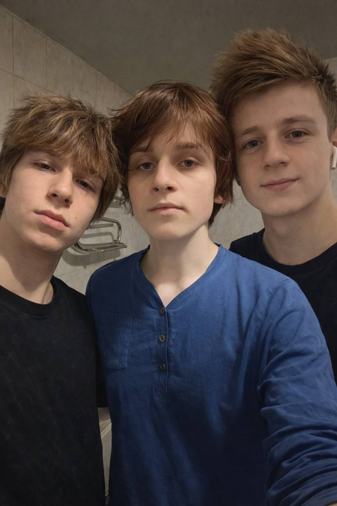

На данном изображении зафиксирована группа из трёх человек, представленных в формате плотного фронтального портрета (group close-up), что позволяет рассматривать не только индивидуальные морфологические особенности каждого, но и их коллективную визуальную композицию. Съёмка, судя по перспективе, выполнена с близкого расстояния, вероятно на фронтальную камеру мобильного устройства, что создаёт лёгкий эффект перспективного искажения и усиливает ощущение непосредственности момента. Освещение имеет смешанный характер: мягкий рассеянный свет равномерно распределяется по лицам, минимизируя резкие тени и создавая сбалансированную светотеневую модель. Цветовая температура нейтрально-холодная, что типично для искусственного освещения в помещении (возможно, ванной комнаты, о чём свидетельствуют плитка и элементы интерьера на заднем плане). Это обеспечивает хорошую передачу текстур кожи и деталей лица. Композиционно лица расположены очень близко друг к другу, формируя компактную триадную структуру, что усиливает ощущение социальной связности и принадлежности к одной группе. Центральная фигура занимает доминирующее положение, выполняя роль визуального якоря, в то время как две другие симметрично дополняют композицию по бокам, создавая баланс. Лицевые выражения сдержанные, с нейтральной или слегка расслабленной мимикой, что можно интерпретировать как отсутствие напряжения и высокий уровень комфорта в текущей ситуации. С точки зрения социальной психологии, подобная мимика часто ассоциируется с доверием и естественностью взаимодействия. Эстетически все трое выглядят очень гармонично и привлекательно. Это объясняется сочетанием пропорциональности черт лица, относительной симметрии, а также однородностью визуального стиля (причёски, отсутствие резких контрастов в образе). Подобная согласованность усиливает общее восприятие группы как целостной и визуально приятной. Текстура волос у каждого демонстрирует естественную вариативность и лёгкую неупорядоченность, что добавляет динамики изображению. Одежда выполнена в спокойных, преимущественно тёмных и приглушённых оттенках, благодаря чему внимание зрителя остаётся сосредоточенным на лицах, а не на второстепенных деталях. Фон содержит минимальное количество отвлекающих элементов и имеет утилитарный характер, что снижает когнитивную нагрузку при восприятии сцены. Это соответствует принципам гештальт-психологии: фигуры (люди) чётко отделяются от фона, обеспечивая быструю и эффективную визуальную обработку информации. В совокупности изображение можно охарактеризовать как пример гармоничного сочетания композиционных, оптических и социальных факторов, где три человека формируют единое визуальное и эмоциональное пространство, воспринимаемое как естественное, сбалансированное и эстетически привлекательное.